一张图等于 16×16 个词：面向大规模图像识别的 TransformerAn Image is Worth 16x16 Words: Transformers for Image Recognition at Scale
尽管 Transformer 架构已成为自然语言处理任务事实上的标准，它在计算机视觉中的应用仍然有限。在视觉领域，注意力要么与卷积网络结合使用，要么被用来替换卷积网络的某些组件，同时保留其整体结构。我们表明，这种对 CNN 的依赖并非必要：一个直接应用于图像块序列的纯 Transformer 就能在图像分类任务上表现很好。当在大量数据上预训练并迁移到多个中等或小规模图像识别基准（ImageNet、CIFAR-100、VTAB 等）时，Vision Transformer（ViT）与当时最好的卷积网络相比取得出色结果，而训练所需的计算资源显著更少1。
正文、图表与参考文献均来自源 PDF 解析结果。专业术语、模型名、数据集名与人名按要求保留原文；术语上的金色虚线表示可悬停（触屏可点按）查看中文解释。参考文献整节保留英文原文不译。
1 微调代码与预训练模型见 https://github.com/google-research/vision_transformer
1 引言
基于自注意力的架构，特别是 Transformer (Vaswani et al., 2017)，已成为自然语言处理（NLP）中的首选模型。主导做法是在大规模文本语料上预训练，再在较小的任务特定数据集上微调 (Devlin et al., 2019)。得益于 Transformer 的计算效率与可扩展性，训练参数量超过 1000 亿的、前所未有的巨大模型已成为可能 (Brown et al., 2020; Lepikhin et al., 2020)。随着模型与数据集不断增大，性能仍没有饱和的迹象。
然而在计算机视觉中，卷积架构仍然占主导地位 (LeCun et al., 1989; Krizhevsky et al., 2012; He et al., 2016)。受 NLP 成功的启发，多项工作尝试把类 CNN 架构与自注意力结合 (Wang et al., 2018; Carion et al., 2020)，有些则完全替换卷积 (Ramachandran et al., 2019; Wang et al., 2020a)。后一类模型虽然理论上高效，但由于使用了特殊的注意力模式，尚未能在现代硬件加速器上有效扩展。因此在大规模图像识别中，经典的类 ResNet 架构仍是当时最好的方法 (Mahajan et al., 2018; Xie et al., 2020; Kolesnikov et al., 2020)。
受 Transformer 在 NLP 中扩展成功的启发，我们尝试以尽可能少的修改，把标准 Transformer 直接应用于图像。为此，我们把图像切分成块（patch），并把这些块的线性嵌入序列作为 Transformer 的输入。图像块的处理方式与 NLP 应用中的 token（词）完全相同。我们把模型以有监督方式训练在图像分类任务上。
当在 ImageNet 这样的中等规模数据集上、不使用强正则化训练时，这些模型只取得比同规模 ResNet 低几个百分点的中等准确率。这一看似令人沮丧的结果或许在意料之中：Transformer 缺少 CNN 固有的一些归纳偏置，例如平移等变性与局部性，因此在数据量不足时泛化不好。
然而，如果模型在更大的数据集（1400 万～3 亿图像）上训练，情况就不同了。我们发现大规模训练胜过归纳偏置。我们的 Vision Transformer（ViT）在足够大的规模上预训练、再迁移到数据点较少的任务时取得了出色结果。当在公开的 ImageNet-21k 数据集或内部的 JFT-300M 数据集上预训练后，ViT 在多个图像识别基准上接近或超过了当时最好水平。特别地，最好的模型在 ImageNet 上达到 88.55% 的准确率，在 ImageNet-ReaL 上达到 90.72%，在 CIFAR-100 上达到 94.55%，在包含 19 个任务的 VTAB 套件上达到 77.63%。
2 相关工作
Transformer 由 Vaswani et al. (2017) 为机器翻译提出，此后已成为许多 NLP 任务中最好的方法。基于 Transformer 的大型模型通常先在大规模语料上预训练，再针对手头任务微调：BERT (Devlin et al., 2019) 使用去噪自监督预训练任务，而 GPT 系列工作使用语言建模作为预训练任务 (Radford et al., 2018; 2019; Brown et al., 2020)。
把自注意力朴素地应用于图像，会要求每个像素关注其他所有像素。由于代价随像素数二次增长，这无法扩展到真实的输入尺寸。因此，为了在图像处理中使用 Transformer，过去尝试过若干近似方法。Parmar et al. (2018) 只对每个查询像素的局部邻域而非全局施加自注意力。这类局部多头点积自注意力模块可以完全替换卷积 (Hu et al., 2019; Ramachandran et al., 2019; Zhao et al., 2020)。在另一条路线上，Sparse Transformers (Child et al., 2019) 采用可扩展的全局自注意力近似，以便适用于图像。扩展注意力的另一种方式是把它施加在大小不同的块上 (Weissenborn et al., 2019)，在极端情况下只沿单个轴施加 (Ho et al., 2019; Wang et al., 2020a)。这些专门的注意力架构中有许多在计算机视觉任务上显示出有希望的结果，但要在硬件加速器上高效实现需要复杂的工程。
与我们最相关的是 Cordonnier et al. (2020) 的模型，它从输入图像中提取 2×2 大小的块并在其上施加完全自注意力。该模型与 ViT 非常相似，但我们的工作更进一步，表明大规模预训练能让普通 Transformer 与当时最好的 CNN 竞争（甚至更好）。此外，Cordonnier et al. (2020) 使用 2×2 像素的小块，使模型只适用于小分辨率图像，而我们也能处理中等分辨率图像。
把卷积神经网络（CNN）与各种形式的自注意力结合也引起了很多兴趣，例如为图像分类增强特征图 (Bello et al., 2019)，或用自注意力进一步处理 CNN 的输出，例如用于目标检测 (Hu et al., 2018; Carion et al., 2020)、视频处理 (Wang et al., 2018; Sun et al., 2019)、图像分类 (Wu et al., 2020)、无监督目标发现 (Locatello et al., 2020) 或统一的文本—视觉任务 (Chen et al., 2020c; Lu et al., 2019; Li et al., 2019)。
另一个近期相关模型是 image GPT（iGPT）(Chen et al., 2020a)，它在降低图像分辨率与颜色空间之后把 Transformer 应用于图像像素。该模型以无监督方式作为生成模型训练，得到的表示之后可以微调或线性探测以评估分类性能，在 ImageNet 上达到最高 72% 的准确率。
我们的工作加入了越来越多在比标准 ImageNet 更大规模上探索图像识别的论文之列。使用额外数据源可以在标准基准上达到当时最好的结果 (Mahajan et al., 2018; Touvron et al., 2019; Xie et al., 2020)。此外，Sun et al. (2017) 研究了 CNN 性能如何随数据集规模扩展，Kolesnikov et al. (2020)、Djolonga et al. (2020) 对从 ImageNet-21k 与 JFT-300M 等大规模数据集进行的 CNN 迁移学习做了经验性探索。我们也聚焦于后两个数据集，但训练的是 Transformer，而不是先前工作使用的基于 ResNet 的模型。
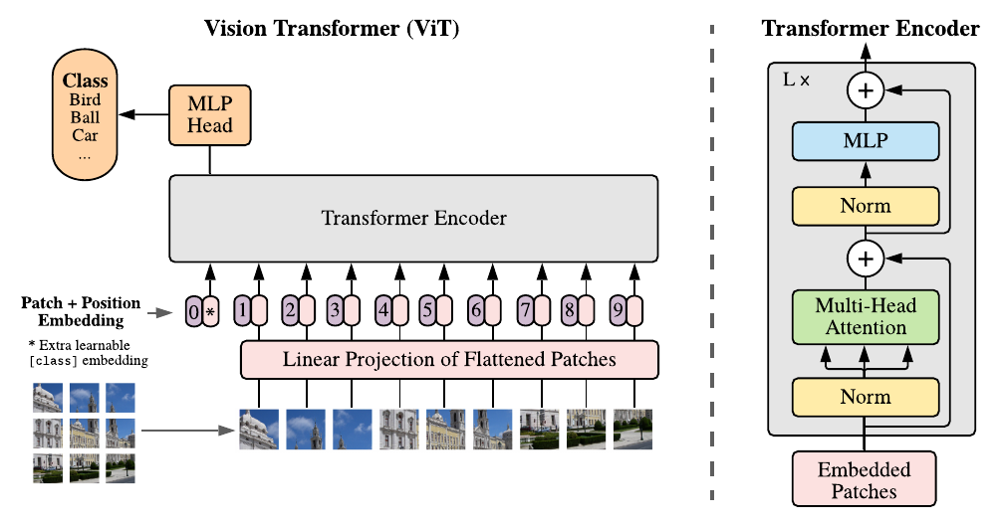
3 方法
在模型设计上，我们尽可能贴近原始 Transformer (Vaswani et al., 2017)。这种有意简单的设定有一个好处：可扩展的 NLP Transformer 架构及其高效实现几乎可以直接拿来用。
3.1 视觉 Transformer（ViT）
模型概览见图 1。标准 Transformer 接收一个一维的 token 嵌入序列作为输入。为处理二维图像，我们把图像 x ∈ ℝH×W×C 重塑为一系列展平的二维块 xp ∈ ℝN×(P²·C)，其中 (H, W) 是原始图像的分辨率，C 是通道数，(P, P) 是每个图像块的分辨率，N = HW/P² 是得到的块数，它同时也是 Transformer 的有效输入序列长度。Transformer 在所有层中使用恒定的隐向量维度 D，因此我们把块展平并用一个可训练的线性投影映射到 D 维（式 1）。我们把这一投影的输出称为块嵌入（patch embedding）。
与 BERT 的 [class] token 类似，我们在嵌入块序列前面加一个可学习的嵌入（z00 = xclass），它在 Transformer 编码器输出端的状态（zL0）用作图像表示 y（式 4）。在预训练与微调期间，都在 zL0 上接一个分类头。分类头在预训练时是一个带一个隐藏层的 MLP，微调时是单个线性层。
位置嵌入被加到块嵌入上以保留位置信息。我们使用标准的可学习一维位置嵌入，因为没有观察到使用更先进的二维感知位置嵌入带来显著性能提升（附录 D.4）。得到的嵌入向量序列作为编码器的输入。
Transformer 编码器 (Vaswani et al., 2017) 由多头自注意力（MSA，见附录 A）与 MLP 块交替组成（式 2、3）。每个块之前施加 LayerNorm（LN），每个块之后施加残差连接 (Wang et al., 2019; Baevski & Auli, 2019)。
MLP 包含两层，中间是 GELU 非线性。
公式变量说明：
式 (1) xclass 是额外加入的可学习分类 token 向量；xpi 是第 i 个图像块展平后的向量；E 是块嵌入的线性投影矩阵（把 P²·C 维映射到 D 维）；Epos 是可学习的位置嵌入矩阵；z0 是送入编码器的输入序列（长度 N+1）。
式 (2)(3) LN 为层归一化；MSA 为多头自注意力；MLP 为两层前馈网络；两式中的加法都是残差连接；ℓ 为层下标，共 L 层；z′ℓ 是该层注意力子层的输出。
式 (4) 取第 L 层输出中对应 [class] token 的那个向量（上标 0 表示序列首位），经 LayerNorm 后得到图像表示 y。
归纳偏置（Inductive bias）。 我们注意到 Vision Transformer 的图像特定归纳偏置远少于 CNN。在 CNN 中，局部性、二维邻域结构与平移等变性在整模型每一层都被内置。在 ViT 中，只有 MLP 层是局部的、平移等变的，而自注意力层是全局的。二维邻域结构被非常节制地使用：在模型开头把图像切分成块，以及在微调时为适应不同分辨率的图像而调整位置嵌入（见下文）。除此之外，初始化时的位置嵌入不携带任何关于块二维位置的信息，块之间的所有空间关系都必须从零学习。
混合架构（Hybrid Architecture）。 作为原始图像块的替代，输入序列也可以由 CNN 的特征图构成 (LeCun et al., 1989)。在这种混合模型中，块嵌入投影 E（式 1）施加于从 CNN 特征图中提取的块上。作为一个特例，块的空间尺寸可以为 1×1，这意味着输入序列就是简单地把特征图的空间维度展平并投影到 Transformer 维度。分类输入嵌入与位置嵌入的加法如前述。
3.2 微调与更高分辨率
通常我们在大数据集上预训练 ViT，再微调到（更小的）下游任务。为此，我们去掉预训练的预测头，接上一个零初始化的 D×K 前馈层，其中 K 是下游类别数。以比预训练更高的分辨率微调往往有益 (Touvron et al., 2019; Kolesnikov et al., 2020)。当输入更高分辨率的图像时，我们保持块大小不变，这会导致有效序列长度变长。Vision Transformer 能处理任意序列长度（受内存限制），但预训练的位置嵌入可能不再有意义。因此我们根据位置嵌入在原图中的位置做二维插值。注意，这种分辨率调整与块提取，是唯一把关于图像二维结构的归纳偏置手动注入 Vision Transformer 的地方。
4 实验
我们评估 ResNet、Vision Transformer（ViT）以及混合模型的表示学习能力。为理解每个模型的数据需求，我们在不同规模的数据集上预训练，并评估许多基准任务。在考虑预训练的计算成本时，ViT 表现得非常有利：以更低的预训练成本，在大多数识别基准上达到当时最好水平。最后我们做了一个使用自监督的小实验，表明自监督 ViT 在未来有前景。
4.1 实验设置
数据集。 为探索模型可扩展性，我们使用 ILSVRC-2012 ImageNet 数据集（1000 类、130 万图像，下文简称 ImageNet）、它的超集 ImageNet-21k（21k 类、1400 万图像）(Deng et al., 2009)，以及 JFT（18k 类、3.03 亿高分辨率图像）(Sun et al., 2017)。我们按 Kolesnikov et al. (2020) 的做法，针对下游任务的测试集对预训练数据集去重。我们把在这些数据集上训练的模型迁移到若干基准任务：ImageNet（使用原始验证标签与清洗后的 ReaL 标签 (Beyer et al., 2020)）、CIFAR-10/100 (Krizhevsky, 2009)、Oxford-IIIT Pets (Parkhi et al., 2012) 与 Oxford Flowers-102 (Nilsback & Zisserman, 2008)。对这些数据集，预处理沿用 Kolesnikov et al. (2020)。
| 模型 | 层数 | 隐藏大小 D | MLP 大小 | 头数 | 参数量 |
| ViT-Base | 12 | 768 | 3072 | 12 | 86M |
| ViT-Large | 24 | 1024 | 4096 | 16 | 307M |
| ViT-Huge | 32 | 1280 | 5120 | 16 | 632M |
表 1 Vision Transformer 模型变体的细节。
我们也在 19 任务的 VTAB 分类套件上评估 (Zhai et al., 2019b)。VTAB 评估到多样任务的低数据迁移，每个任务使用 1000 个训练样例。任务分为三组：Natural（自然）——如上述 Pets、CIFAR 等任务；Specialized（专门）——医学与卫星图像；Structured（结构化）——需要几何理解的任务，如定位。
模型变体。 ViT 的配置以 BERT (Devlin et al., 2019) 所用配置为基础，汇总于表 1。「Base」与「Large」模型直接取自 BERT，并新增更大的「Huge」模型。下文用简短记号表示模型规模与输入块大小：例如 ViT-L/16 表示「Large」变体、输入块大小为 16×16。注意 Transformer 的序列长度与块大小的平方成反比，因此块更小的模型计算上更昂贵。
作为基线 CNN，我们使用 ResNet (He et al., 2016)，但把批归一化层 (Ioffe & Szegedy, 2015) 替换为组归一化 (Wu & He, 2018)，并使用标准化卷积 (Qiao et al., 2019)。这些修改改善了迁移 (Kolesnikov et al., 2020)，我们把修改后的模型记为「ResNet (BiT)」。对混合模型，我们把中间特征图以 1 个「像素」的块大小送入 ViT。为试验不同序列长度，我们或 (i) 取常规 ResNet50 第 4 阶段的输出，或 (ii) 去掉第 4 阶段、在第 3 阶段放入相同层数（保持总层数不变），并取这一扩展后的第 3 阶段输出。方案 (ii) 得到 4 倍长的序列长度，以及更昂贵的 ViT 模型。
训练与微调。 我们训练所有模型（包括 ResNet）时使用 Adam (Kingma & Ba, 2015)，β1 = 0.9、β2 = 0.999，批量大小 4096，并施加 0.1 的高权重衰减——我们发现这对所有模型的迁移都有用（附录 D.1 表明，与常见做法不同，在我们的设定中 Adam 对 ResNet 略优于 SGD）。我们使用线性学习率预热与衰减，细节见附录 B.1。微调时我们对所有模型使用带动量的 SGD，批量大小 512，见附录 B.1.1。对表 2 的 ImageNet 结果，我们在更高分辨率上微调：ViT-L/16 用 512，ViT-H/14 用 518，并使用 Polyak & Juditsky (1992) 系数 0.9999 的平均 (Ramachandran et al., 2019; Wang et al., 2020b)。
评价指标。 我们以少样本或微调准确率报告在下游数据集上的结果。微调准确率反映各模型在相应数据集上微调后的性能。少样本准确率通过求解一个正则化最小二乘回归问题得到：把训练图像子集的（冻结）表示映射到 {−1, 1}K 目标向量。这一形式让我们能以闭式解精确求解。虽然我们主要关注微调性能，有时也会用线性少样本准确率做快速即时评估，因为微调太昂贵。
4.2 与当时最好水平的比较
我们首先把最大的模型 ViT-H/14 与 ViT-L/16 同文献中当时最好的 CNN 比较。第一个比较对象是 Big Transfer（BiT）(Kolesnikov et al., 2020)，它用大型 ResNet 做有监督迁移学习。第二个是 Noisy Student (Xie et al., 2020)，它是在 ImageNet 与去掉标签的 JFT-300M 上做半监督训练的大型 EfficientNet。当时 Noisy Student 是 ImageNet 上最好的方法，BiT-L 在本文报告的其他数据集上最好。所有模型都在 TPUv3 硬件上训练，我们报告预训练每个模型所用的 TPUv3-core-days 数，即训练所用 TPU v3 核数（每芯片 2 核）乘以训练天数。
| 本文-JFT (ViT-H/14) |
本文-JFT (ViT-L/16) |
本文-I21k (ViT-L/16) |
BiT-L (ResNet152x4) |
Noisy Student (EfficientNet-L2) |
|
| ImageNet | 88.55 ± 0.04 | 87.76 ± 0.03 | 85.30 ± 0.02 | 87.54 ± 0.02 | 88.4/88.5∗ |
| ImageNet Real | 90.72 ± 0.05 | 90.54 ± 0.03 | 88.62 ± 0.05 | 90.54 | 90.55 |
| CIFAR-10 | 99.50 ± 0.06 | 99.42 ± 0.03 | 99.15 ± 0.03 | 99.37 ± 0.06 | — |
| CIFAR-100 | 94.55 ± 0.04 | 93.90 ± 0.05 | 93.25 ± 0.05 | 93.51 ± 0.08 | — |
| Oxford-IIIT Pets | 97.56 ± 0.03 | 97.32 ± 0.11 | 94.67 ± 0.15 | 96.62 ± 0.23 | — |
| Oxford Flowers-102 | 99.68 ± 0.02 | 99.74 ± 0.00 | 99.61 ± 0.02 | 99.63 ± 0.03 | — |
| VTAB（19 任务） | 77.63 ± 0.23 | 76.28 ± 0.46 | 72.72 ± 0.21 | 76.29 ± 1.70 | — |
| TPUv3-core-days | 2.5k | 0.68k | 0.23k | 9.9k | 12.3k |
表 2 在流行的图像分类基准上与当时最好水平的比较。我们报告三次微调运行的准确率均值与标准差。在 JFT-300M 上预训练的 Vision Transformer 模型在所有数据集上都优于基于 ResNet 的基线，而预训练所需计算资源显著更少。在较小的公开数据集 ImageNet-21k 上预训练的 ViT 表现也很好。∗Touvron et al. (2020) 报告了略作改进的 88.5% 结果。
表 2 给出结果。在 JFT-300M 上预训练的较小模型 ViT-L/16 在所有任务上都优于 BiT-L（后者在同一数据集上预训练），而训练所需的计算资源显著更少。更大的模型 ViT-H/14 进一步提升性能，尤其是在更具挑战性的数据集上——ImageNet、CIFAR-100 与 VTAB 套件。有趣的是，这个模型预训练所用的计算量仍显著少于此前的最好水平。不过我们注意到，预训练效率可能不仅受架构选择影响，也受训练计划、优化器、权重衰减等其他参数影响。我们在 4.4 节对不同架构做了性能与计算量的受控研究。最后，在公开的 ImageNet-21k 数据集上预训练的 ViT-L/16 在大多数数据集上也表现良好，且预训练资源更少：它可以用一块 8 核的标准云 TPUv3 在大约 30 天内训练完成。
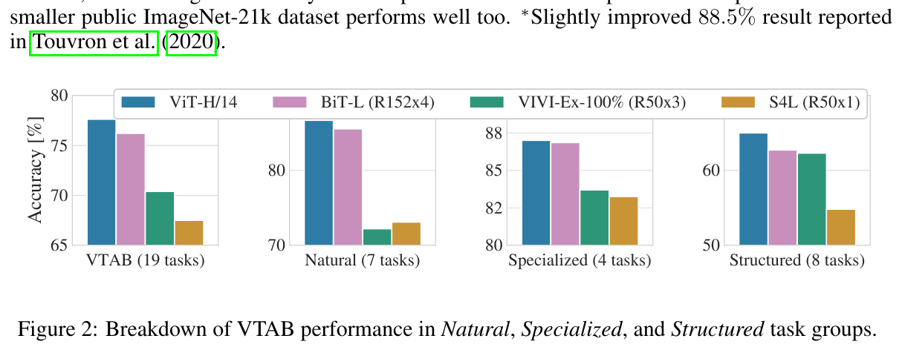
图 2 把 VTAB 任务分解为各自的组，并与该基准上此前的 SOTA 方法比较：BiT、VIVI——在 ImageNet 与 Youtube 上联合训练的 ResNet (Tschannen et al., 2020)，以及 S4L——在 ImageNet 上的有监督加半监督学习 (Zhai et al., 2019a)。ViT-H/14 在 Natural 与 Structured 任务上优于 BiT-R152x4 及其他方法。在 Specialized 上，前两个模型的表现相似。
4.3 预训练数据的需求
Vision Transformer 在大型 JFT-300M 数据集上预训练时表现良好。既然它的视觉归纳偏置比 ResNet 少，数据集规模有多关键？我们做两组实验。
第一，我们在规模递增的数据集上预训练 ViT：ImageNet、ImageNet-21k、JFT-300M。为提升在较小数据集上的性能，我们优化三个基本正则化参数——权重衰减、dropout 与标签平滑。图 3 给出微调到 ImageNet 后的结果（其他数据集的结果见表 5）。在最小数据集 ImageNet 上预训练时，尽管有（适度的）正则化，ViT-Large 模型仍不如 ViT-Base 模型。用 ImageNet-21k 预训练时，二者表现相近。只有在 JFT-300M 上，我们才看到更大模型的全部好处。图 3 还展示了不同规模 BiT 模型所覆盖的性能区间。BiT CNN 在 ImageNet 上优于 ViT，但随着数据集变大，ViT 反超。
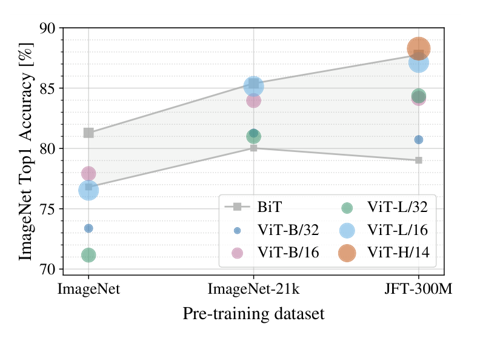
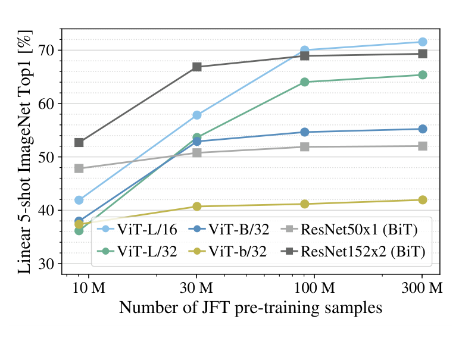
第二，我们在 9M、30M、90M 的随机子集以及完整的 JFT-300M 数据集上训练模型。对较小子集我们不做额外正则化，所有设定使用相同超参数。这样我们评估的是模型的内在性质，而不是正则化的效果。不过我们使用早停，并报告训练期间达到的最好验证准确率。为节省计算，我们报告少样本线性准确率而不是完整微调准确率。图 4 给出结果。在计算成本相当的情况下，Vision Transformer 在较小数据集上比 ResNet 过拟合更严重。例如 ViT-B/32 略快于 ResNet50；它在 9M 子集上表现差得多，但在 90M 以上的子集上更好。ResNet152x2 与 ViT-L/16 同样如此。这一结果强化了一种直觉：卷积归纳偏置对较小数据集有用，但对更大的数据集，直接从数据中学习相关模式就足够了，甚至是有益的。
总体而言，ImageNet 上的少样本结果（图 4）以及 VTAB 上的低数据结果（表 2）对极低数据迁移来说都显得很有前景。进一步分析 ViT 的少样本性质是未来工作一个令人兴奋的方向。
4.4 规模研究
我们通过评估从 JFT-300M 的迁移性能，对不同模型做受控的规模研究。在这一设定下，数据规模不构成模型性能的瓶颈，我们评估各模型性能与预训练成本的关系。模型集合包括：7 个 ResNet——R50x1、R50x2、R101x1、R152x1、R152x2 预训练 7 个 epoch，另有 R152x2 与 R200x3 预训练 14 个 epoch；6 个 Vision Transformer——ViT-B/32、B/16、L/32、L/16 预训练 7 个 epoch，另有 L/16 与 H/14 预训练 14 个 epoch；以及 5 个混合模型——R50+ViT-B/32、B/16、L/32、L/16 预训练 7 个 epoch，另有 R50+ViT-L/16 预训练 14 个 epoch（对混合模型，模型名末尾的数字不是块大小，而是 ResNet 主干的总下采样率）。
图 5 给出迁移性能与总预训练计算量的关系（计算成本细节见附录 D.5）。各模型的详细结果见附录表 6。可以观察到一些规律。第一，在性能/计算权衡上 Vision Transformer 全面优于 ResNet。ViT 用大约 2–4 倍更少的计算量达到相同性能（在 5 个数据集上平均）。第二，混合模型在较小计算预算下略优于 ViT，但差距在更大模型上消失。这个结果有些出人意料，因为人们可能预期卷积式的局部特征处理在任何规模下都能帮助 ViT。第三，Vision Transformer 在所尝试的范围内似乎没有饱和，这为未来的扩展努力提供了动力。
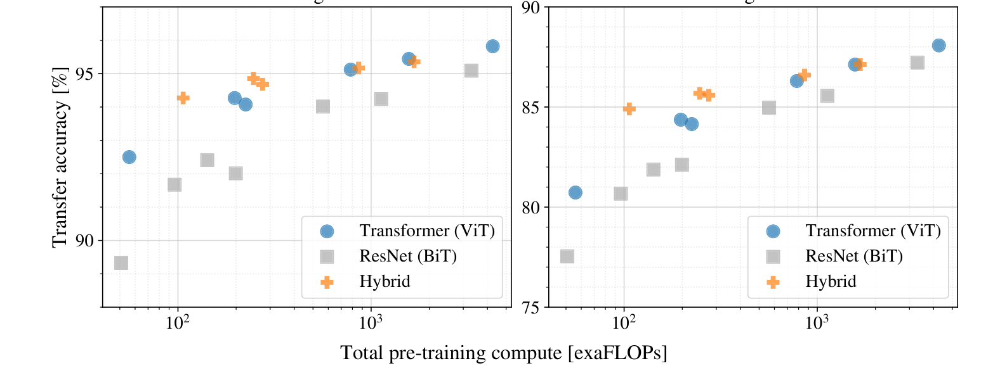
4.5 检视 Vision Transformer
为了初步理解 Vision Transformer 如何处理图像数据，我们分析它的内部表示。Vision Transformer 的第一层把展平的块线性投影到更低维空间（式 1）。图 7（左）显示学到的嵌入滤波器的前几个主成分。这些成分看起来像是每个块内部精细结构的低维表示的合理基函数。
投影之后，一个可学习的位置嵌入被加到块表示上。图 7（中）表明，模型学会了把图像内的距离编码到位置嵌入的相似性中，即更近的块倾向于有更相似的位置嵌入。此外，行列结构也显现出来：同一行/列的块有相似的嵌入。最后，在更大的网格上有时会出现正弦结构（附录 D）。位置嵌入能学会表示二维图像拓扑，这解释了为什么手工设计的二维感知嵌入变体没有带来改进（附录 D.4）。
自注意力使 ViT 即使在最低层也能整合整幅图像的信息。我们考察网络在多大程度上利用了这一能力。具体地说，我们根据注意力权重计算信息被整合时所跨越的图像空间平均距离（图 7 右）。这一「注意力距离」类似于 CNN 中的感受野大小。
我们发现有些头在最低层就已经关注图像的大部分区域，说明模型确实利用了全局整合信息的能力。其他注意力头在低层始终只有很小的注意力距离。这种高度局部化的注意力在 Transformer 之前接 ResNet 的混合模型中不太明显（图 7 右），提示它可能与 CNN 中早期卷积层起类似作用。此外，注意力距离随网络深度增加。总体而言，我们发现模型关注的是与分类语义相关的图像区域（图 6）。
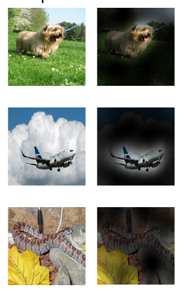
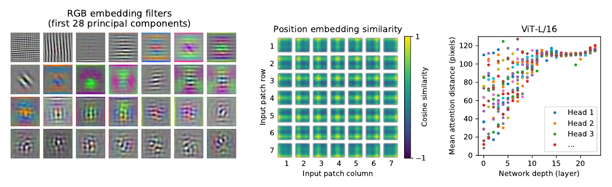
4.6 自监督
Transformer 在 NLP 任务上表现令人印象深刻。然而它们的成功不仅来自出色的可扩展性，也来自大规模自监督预训练 (Devlin et al., 2019; Radford et al., 2018)。我们也对掩蔽块预测作了一次初步探索，模仿 BERT 中使用的掩蔽语言建模任务。借助自监督预训练，我们较小的 ViT-B/16 模型在 ImageNet 上达到 79.9% 的准确率，比从零训练显著提高 2%，但仍比有监督预训练低 4%。更多细节见附录 B.1.2。我们把对比式预训练 (Chen et al., 2020b; He et al., 2020; Bachman et al., 2019; Henaff et al., 2020) 的探索留待未来工作。
5 结论
我们探索了把 Transformer 直接应用于图像识别。与计算机视觉中先前使用自注意力的工作不同，除了最初的块提取步骤之外，我们没有在架构中引入图像特定的归纳偏置。相反，我们把图像看作一个块的序列，并用 NLP 中使用的标准 Transformer 编码器处理它。这种简单却可扩展的策略与大规模数据集上的预训练结合时效果出奇地好。因此，Vision Transformer 在许多图像分类数据集上达到或超过了当时最好的水平，而预训练相对便宜。
尽管这些初步结果令人鼓舞，仍有许多挑战。其一是把 ViT 应用到其他计算机视觉任务，如检测与分割。我们的结果与 Carion et al. (2020) 的结果一起，表明这一方向很有前景。另一个挑战是继续探索自监督预训练方法。我们的初步实验显示自监督预训练带来了改进，但自监督与大规模有监督预训练之间仍有很大差距。最后，进一步扩展 ViT 很可能带来更好的性能。
致谢 本工作于柏林、苏黎世与阿姆斯特丹完成。我们感谢 Google 许多同事的帮助，特别感谢 Andreas Steiner 在基础设施与代码开源方面的关键帮助；Joan Puigcerver 与 Maxim Neumann 在大规模训练基础设施方面的帮助；以及 Dmitry Lepikhin、Aravindh Mahendran、Daniel Keysers、Mario Lučić、Noam Shazeer、Ashish Vaswani 与 Colin Raffel 的有益讨论。
参考文献
按要求，参考文献整节保留英文原文，未作翻译。
- Samira Abnar and Willem Zuidema. Quantifying attention flow in transformers. In ACL, 2020.
- Philip Bachman, R Devon Hjelm, and William Buchwalter. Learning representations by maximizing mutual information across views. In NeurIPS, 2019.
- Alexei Baevski and Michael Auli. Adaptive input representations for neural language modeling. In ICLR, 2019.
- I. Bello, B. Zoph, Q. Le, A. Vaswani, and J. Shlens. Attention augmented convolutional networks. In ICCV, 2019.
- Lucas Beyer, Olivier J. Hénaff, Alexander Kolesnikov, Xiaohua Zhai, and Aäron van den Oord. Are we done with imagenet? arXiv, 2020.
- Tom B Brown, Benjamin Mann, Nick Ryder, Melanie Subbiah, Jared Kaplan, Prafulla Dhariwal, Arvind Neelakantan, Pranav Shyam, Girish Sastry, Amanda Askell, et al. Language models are few-shot learners. arXiv, 2020.
- Nicolas Carion, Francisco Massa, Gabriel Synnaeve, Nicolas Usunier, Alexander Kirillov, and Sergey Zagoruyko. End-to-end object detection with transformers. In ECCV, 2020.
- Mark Chen, Alec Radford, Rewon Child, Jeff Wu, and Heewoo Jun. Generative pretraining from pixels. In ICML, 2020a.
- Ting Chen, Simon Kornblith, Mohammad Norouzi, and Geoffrey E. Hinton. A simple framework for contrastive learning of visual representations. In ICML, 2020b.
- Yen-Chun Chen, Linjie Li, Licheng Yu, Ahmed El Kholy, Faisal Ahmed, Zhe Gan, Yu Cheng, and Jingjing Liu. UNITER: UNiversal Image-TExt Representation Learning. In ECCV, 2020c.
- Rewon Child, Scott Gray, Alec Radford, and Ilya Sutskever. Generating long sequences with sparse transformers. arXiv, 2019.
- Jean-Baptiste Cordonnier, Andreas Loukas, and Martin Jaggi. On the relationship between selfattention and convolutional layers. In ICLR, 2020.
- J. Deng, W. Dong, R. Socher, L. Li, Kai Li, and Li Fei-Fei. Imagenet: A large-scale hierarchical image database. In CVPR, 2009.
- Jacob Devlin, Ming-Wei Chang, Kenton Lee, and Kristina Toutanova. BERT: Pre-training of deep bidirectional transformers for language understanding. In NAACL, 2019.
- Josip Djolonga, Jessica Yung, Michael Tschannen, Rob Romijnders, Lucas Beyer, Alexander Kolesnikov, Joan Puigcerver, Matthias Minderer, Alexander D'Amour, Dan Moldovan, Sylvan Gelly, Neil Houlsby, Xiaohua Zhai, and Mario Lucic. On robustness and transferability of convolutional neural networks. arXiv, 2020.
- Kaiming He, Xiangyu Zhang, Shaoqing Ren, and Jian Sun. Deep residual learning for image recognition. In CVPR, 2016.
- Kaiming He, Haoqi Fan, Yuxin Wu, Saining Xie, and Ross Girshick. Momentum contrast for unsupervised visual representation learning. In CVPR, 2020.
- Jonathan Ho, Nal Kalchbrenner, Dirk Weissenborn, and Tim Salimans. Axial attention in multidimensional transformers. arXiv, 2019.
- Han Hu, Jiayuan Gu, Zheng Zhang, Jifeng Dai, and Yichen Wei. Relation networks for object detection. In CVPR, 2018.
- Han Hu, Zheng Zhang, Zhenda Xie, and Stephen Lin. Local relation networks for image recognition. In ICCV, 2019.
- Zilong Huang, Xinggang Wang, Yunchao Wei, Lichao Huang, Humphrey Shi, Wenyu Liu, and Thomas S. Huang. Ccnet: Criss-cross attention for semantic segmentation. In ICCV, 2020.
- Olivier J. Hénaff, Aravind Srinivas, Jeffrey De Fauw, Ali Razavi, Carl Doersch, S. M. Ali Eslami, and Aaron van den Oord. Data-efficient image recognition with contrastive predictive coding. In ICML, 2020.
- Sergey Ioffe and Christian Szegedy. Batch normalization: Accelerating deep network training by reducing internal covariate shift. 2015.
- Diederik P. Kingma and Jimmy Ba. Adam: A method for stochastic optimization. In ICLR, 2015.
- Alexander Kolesnikov, Lucas Beyer, Xiaohua Zhai, Joan Puigcerver, Jessica Yung, Sylvain Gelly, and Neil Houlsby. Big transfer (BiT): General visual representation learning. In ECCV, 2020.
- Alex Krizhevsky. Learning multiple layers of features from tiny images. Technical report, 2009.
- Alex Krizhevsky, Ilya Sutskever, and Geoffrey E. Hinton. Imagenet classification with deep convolutional neural networks. In NIPS, 2012.
- Y. LeCun, B. Boser, J. Denker, D. Henderson, R. Howard, W. Hubbard, and L. Jackel. Backpropagation applied to handwritten zip code recognition. Neural Computation, 1:541–551, 1989.
- Dmitry Lepikhin, HyoukJoong Lee, Yuanzhong Xu, Dehao Chen, Orhan Firat, Yanping Huang, Maxim Krikun, Noam Shazeer, and Zhifeng Chen. Gshard: Scaling giant models with conditional computation and automatic sharding. arXiv, 2020.
- Liunian Harold Li, Mark Yatskar, Da Yin, Cho-Jui Hsieh, and Kai-Wei Chang. VisualBERT: A Simple and Performant Baseline for Vision and Language. In Arxiv, 2019.
- Francesco Locatello, Dirk Weissenborn, Thomas Unterthiner, Aravindh Mahendran, Georg Heigold, Jakob Uszkoreit, Alexey Dosovitskiy, and Thomas Kipf. Object-centric learning with slot attention. arXiv, 2020.
- Jiasen Lu, Dhruv Batra, Devi Parikh, and Stefan Lee. ViLBERT: Pretraining Task-Agnostic Visiolinguistic Representations for Vision-and-Language Tasks. In NeurIPS, 2019.
- Dhruv Mahajan, Ross Girshick, Vignesh Ramanathan, Kaiming He, Manohar Paluri, Yixuan Li, Ashwin Bharambe, and Laurens van der Maaten. Exploring the limits of weakly supervised pretraining. In ECCV, 2018.
- M. Nilsback and A. Zisserman. Automated flower classification over a large number of classes. In ICVGIP, 2008.
- Omkar M. Parkhi, Andrea Vedaldi, Andrew Zisserman, and C. V. Jawahar. Cats and dogs. In CVPR, 2012.
- Niki Parmar, Ashish Vaswani, Jakob Uszkoreit, Lukasz Kaiser, Noam Shazeer, Alexander Ku, and Dustin Tran. Image transformer. In ICML, 2018.
- B. T. Polyak and A. B. Juditsky. Acceleration of stochastic approximation by averaging. SIAM Journal on Control and Optimization, 30(4):838–855, 1992. doi: 10.1137/0330046. URL https://doi.org/10.1137/0330046.
- Siyuan Qiao, Huiyu Wang, Chenxi Liu, Wei Shen, and Alan Yuille. Weight standardization. arXiv preprint arXiv:1903.10520, 2019.
- Alec Radford, Karthik Narasimhan, Tim Salimans, and Ilya Sutskever. Improving language understanding with unsupervised learning. Technical Report, 2018.
- Alec Radford, Jeff Wu, Rewon Child, David Luan, Dario Amodei, and Ilya Sutskever. Language models are unsupervised multitask learners. Technical Report, 2019.
- Prajit Ramachandran, Niki Parmar, Ashish Vaswani, Irwan Bello, Anselm Levskaya, and Jon Shlens. Stand-alone self-attention in vision models. In NeurIPS, 2019.
- Chen Sun, Abhinav Shrivastava, Saurabh Singh, and Abhinav Gupta. Revisiting unreasonable effectiveness of data in deep learning era. In ICCV, 2017.
- Chen Sun, Austin Myers, Carl Vondrick, Kevin Murphy, and Cordelia Schmid. Videobert: A joint model for video and language representation learning. In ICCV, 2019.
- Hugo Touvron, Andrea Vedaldi, Matthijs Douze, and Hervé Jégou. Fixing the train-test resolution discrepancy. In NeurIPS, 2019.
- Hugo Touvron, Andrea Vedaldi, Matthijs Douze, and Hervé Jégou. Fixing the train-test resolution discrepancy: Fixefficientnet. arXiv preprint arXiv:2003.08237, 2020.
- Michael Tschannen, Josip Djolonga, Marvin Ritter, Aravindh Mahendran, Neil Houlsby, Sylvain Gelly, and Mario Lucic. Self-supervised learning of video-induced visual invariances. In Proceedings of the IEEE/CVF Conference on Computer Vision and Pattern Recognition (CVPR), June 2020.
- Ashish Vaswani, Noam Shazeer, Niki Parmar, Jakob Uszkoreit, Llion Jones, Aidan N Gomez, Łukasz Kaiser, and Illia Polosukhin. Attention is all you need. In NIPS, 2017.
- Huiyu Wang, Yukun Zhu, Bradley Green, Hartwig Adam, Alan Yuille, and Liang-Chieh Chen. Axial-deeplab: Stand-alone axial-attention for panoptic segmentation. In ECCV, 2020a.
- Huiyu Wang, Yukun Zhu, Bradley Green, Hartwig Adam, Alan Yuille, and Liang-Chieh Chen. Axial-deeplab: Stand-alone axial-attention for panoptic segmentation. arXiv preprint arXiv:2003.07853, 2020b.
- Qiang Wang, Bei Li, Tong Xiao, Jingbo Zhu, Changliang Li, Derek F. Wong, and Lidia S. Chao. Learning deep transformer models for machine translation. In ACL, 2019.
- Xiaolong Wang, Ross Girshick, Abhinav Gupta, and Kaiming He. Non-local neural networks. In CVPR, 2018.
- Dirk Weissenborn, Oscar Täckström, and Jakob Uszkoreit. Scaling autoregressive video models. In ICLR, 2019.
- Bichen Wu, Chenfeng Xu, Xiaoliang Dai, Alvin Wan, Peizhao Zhang, Masayoshi Tomizuka, Kurt Keutzer, and Peter Vajda. Visual transformers: Token-based image representation and processing for computer vision. arxiv, 2020.
- Yuxin Wu and Kaiming He. Group normalization. In ECCV, 2018.
- Qizhe Xie, Minh-Thang Luong, Eduard Hovy, and Quoc V. Le. Self-training with noisy student improves imagenet classification. In CVPR, 2020.
- Xiaohua Zhai, Avital Oliver, Alexander Kolesnikov, and Lucas Beyer. S4L: Self-Supervised Semi-Supervised Learning. In ICCV, 2019a.
- Xiaohua Zhai, Joan Puigcerver, Alexander Kolesnikov, Pierre Ruyssen, Carlos Riquelme, Mario Lucic, Josip Djolonga, Andre Susano Pinto, Maxim Neumann, Alexey Dosovitskiy, et al. A large-scale study of representation learning with the visual task adaptation benchmark. arXiv preprint arXiv:1910.04867, 2019b.
- Hengshuang Zhao, Jiaya Jia, and Vladlen Koltun. Exploring self-attention for image recognition. In CVPR, 2020.
附录
A 多头自注意力
标准的 qkv 自注意力（SA，Vaswani et al. (2017)）是神经架构中常用的构件。对输入序列 z ∈ ℝN×D 中的每个元素，我们计算序列中所有值 v 的加权和。注意力权重 Aij 基于序列中两个元素之间的成对相似度，以及它们各自的查询 qi 与键 kj 表示。
多头自注意力（MSA）是 SA 的扩展：我们并行执行 k 个自注意力运算（称为「头」），并把它们的输出拼接后投影。为在改变 k 时保持计算量与参数量不变，Dh（式 5）通常设为 D/k。
公式变量说明：z 是输入序列（N 个 token，每个 D 维）；Uqkv 是把输入投影成查询、键、值的一组可学习权重（共 3Dh 维输出）；Dh 是每个头的维度；q k⊤/√Dh 得到 N×N 的两两相似度得分，除以 √Dh 是缩放；softmax 按行归一化得到注意力权重矩阵 A；SA(z) = A v 即用权重对值加权求和；MSA 把 k 个头的输出拼接（维度 k·Dh）后乘以输出投影 Umsa 映射回 D 维。
B 实验细节
B.1 训练
表 3 汇总了我们不同模型的训练设定。我们发现在 ImageNet 上从零训练模型时，强正则化是关键。使用 dropout 时，它施加在每个稠密层之后（qkv 投影除外），以及位置嵌入加到块嵌入之后立刻施加。混合模型使用与其对应 ViT 完全相同的设定训练。最后，所有训练都在分辨率 224 上完成。
| 模型 | 数据集 | Epoch 数 | 基础学习率 | 学习率衰减 | 权重衰减 | Dropout |
| ViT-B/{16,32} | JFT-300M | 7 | 8 · 10−4 | linear | 0.1 | 0.0 |
| ViT-L/32 | JFT-300M | 7 | 6 · 10−4 | linear | 0.1 | 0.0 |
| ViT-L/16 | JFT-300M | 7/14 | 4 · 10−4 | linear | 0.1 | 0.0 |
| ViT-H/14 | JFT-300M | 14 | 3 · 10−4 | linear | 0.1 | 0.0 |
| R50x{1,2} | JFT-300M | 7 | 10−3 | linear | 0.1 | 0.0 |
| R101x1 | JFT-300M | 7 | 8 · 10−4 | linear | 0.1 | 0.0 |
| R152x{1,2} | JFT-300M | 7 | 6 · 10−4 | linear | 0.1 | 0.0 |
| R50+ViT-B/{16,32} | JFT-300M | 7 | 8 · 10−4 | linear | 0.1 | 0.0 |
| R50+ViT-L/32 | JFT-300M | 7 | 2 · 10−4 | linear | 0.1 | 0.0 |
| R50+ViT-L/16 | JFT-300M | 7/14 | 4 · 10−4 | linear | 0.1 | 0.0 |
| ViT-B/{16,32} | ImageNet-21k | 90 | 10−3 | linear | 0.03 | 0.1 |
| ViT-L/{16,32} | ImageNet-21k | 30/90 | 10−3 | linear | 0.03 | 0.1 |
| ViT-* | ImageNet | 300 | 3 · 10−3 | cosine | 0.3 | 0.1 |
表 3 训练超参数。所有模型都用批量大小 4096 与 10k 步的学习率预热训练。对 ImageNet，我们发现额外施加全局范数 1 的梯度裁剪有益。训练分辨率为 224。
B.1.1 微调
我们用动量 0.9 的 SGD 微调所有 ViT 模型。我们对学习率做了小规模网格搜索，学习率范围见表 4。为此，我们从训练集中取小子集（Pets 与 Flowers 用 10%，CIFAR 用 2%，ImageNet 用 1%）作为开发集，在其余数据上训练。最终结果我们在整个训练集上训练，并在相应测试数据上评估。微调 ResNet 与混合模型时我们使用完全相同的设定，唯一例外是 ImageNet 上我们在学习率搜索中另加 0.06 这个取值。此外对 ResNet，我们还运行 Kolesnikov et al. (2020) 的设定，并在这次运行与我们的搜索中选最好的结果。最后，若无特别说明，所有微调实验都在 384 分辨率下进行（在与训练不同的分辨率上微调是常见做法 (Kolesnikov et al., 2020)）。
| 数据集 | 步数 | 基础学习率 |
| ImageNet | 20 000 | {0.003, 0.01, 0.03, 0.06} |
| CIFAR100 | 10 000 | {0.001, 0.003, 0.01, 0.03} |
| CIFAR10 | 10 000 | {0.001, 0.003, 0.01, 0.03} |
| Oxford-IIIT Pets | 500 | {0.001, 0.003, 0.01, 0.03} |
| Oxford Flowers-102 | 500 | {0.001, 0.003, 0.01, 0.03} |
| VTAB（19 任务） | 2 500 | 0.01 |
表 4 微调超参数。所有模型都用余弦学习率衰减、批量大小 512、无权重衰减、全局范数 1 的梯度裁剪微调。若无特别说明，微调分辨率为 384。
把 ViT 模型迁移到另一个数据集时，我们去掉整个头（两个线性层），换成单个零初始化的线性层，其输出维度为目标数据集所需类别数。我们发现这比简单重新初始化最后一层略微更稳健。
对 VTAB 我们遵循 Kolesnikov et al. (2020) 的协议，对所有任务使用相同超参数设定。我们使用学习率 0.01 并训练 2500 步（表 4）。这一设定是通过对两个学习率和两个调度做小规模搜索、并选择在 200 样例验证集上 VTAB 分数最高的设定得到的。我们遵循 Kolesnikov et al. (2020) 所用的预处理，只是不使用任务特定的输入分辨率。相反，我们发现 Vision Transformer 从高分辨率（384×384）中获益最多，对所有任务都是如此。
B.1.2 自监督
我们在初步的自监督实验中使用掩蔽块预测目标。为此，我们破坏 50% 的块嵌入：或是把它们的嵌入替换为可学习的 [mask] 嵌入（80%）、替换为另一个随机块嵌入（10%），或保持不变（10%）。这一设定与 Devlin et al. (2019) 用于语言的设定非常相似。最后，我们用每个被破坏块的表示预测其 3 位平均颜色（即共 512 种颜色）。
我们在 JFT 上用批量大小 4096 训练自监督模型 1M 步（约 14 个 epoch）。我们使用 Adam，基础学习率 2 · 10−4，预热 10k 步，余弦学习率衰减。作为预训练的预测目标，我们尝试了以下设定：1) 只预测 3 位平均颜色（即 1 个 512 色预测）；2) 并行预测 16×16 块下采样到 4×4 版本、每位 3 位颜色（即 16 个 512 色预测）；3) 用 L2 对整块做回归（即对 3 个 RGB 通道做 256 个回归）。令人意外的是，我们发现这些做法都相当有效，不过 L2 略差。我们只报告方案 1) 的最终结果，因为它在少样本性能上最好。我们也试验了 Devlin et al. (2019) 使用的 15% 破坏率，但在我们的少样本指标上结果也略差。
最后我们要说明，我们这种掩蔽块预测的实现在 ImageNet 分类上取得类似性能增益时，并不需要那么大量的预训练，也不需要 JFT 这样大的数据集。也就是说，我们观察到预训练 100k 步之后下游性能的收益递减，而在 ImageNet 上预训练时也看到类似增益。
C 补充结果
我们报告与正文中图表对应的详细结果。表 5 对应正文图 3，给出在不同规模数据集（ImageNet、ImageNet-21k、JFT-300M）上预训练的各 ViT 模型在多个数据集上的迁移性能2。表 6 对应正文图 5，给出不同规模的 ViT、ResNet 与混合模型的迁移性能，以及它们预训练计算成本（exaFLOPs）的估计。
| ViT-B/16 | ViT-B/32 | ViT-L/16 | ViT-L/32 | ViT-H/14 | ||
| ImageNet | CIFAR-10 | 98.13 | 97.77 | 97.86 | 97.94 | - |
| CIFAR-100 | 87.13 | 86.31 | 86.35 | 87.07 | - | |
| ImageNet | 77.91 | 73.38 | 76.53 | 71.16 | - | |
| ImageNet Real | 83.57 | 79.56 | 82.19 | 77.83 | - | |
| Oxford Flowers-102 | 89.49 | 85.43 | 89.66 | 86.36 | - | |
| Oxford-IIIT-Pets | 93.81 | 92.04 | 93.64 | 91.35 | - | |
| ImageNet-21k | CIFAR-10 | 98.95 | 98.79 | 99.16 | 99.13 | 99.27 |
| CIFAR-100 | 91.67 | 91.97 | 93.44 | 93.04 | 93.82 | |
| ImageNet | 83.97 | 81.28 | 85.15 | 80.99 | 85.13 | |
| ImageNet Real | 88.35 | 86.63 | 88.40 | 85.65 | 88.70 | |
| Oxford Flowers-102 | 99.38 | 99.11 | 99.61 | 99.19 | 99.51 | |
| Oxford-IIIT-Pets | 94.43 | 93.02 | 94.73 | 93.09 | 94.82 | |
| JFT-300M | CIFAR-10 | 99.00 | 98.61 | 99.38 | 99.19 | 99.50 |
| CIFAR-100 | 91.87 | 90.49 | 94.04 | 92.52 | 94.55 | |
| ImageNet | 84.15 | 80.73 | 87.12 | 84.37 | 88.04 | |
| ImageNet Real | 88.85 | 86.27 | 89.99 | 88.28 | 90.33 | |
| Oxford Flowers-102 | 99.56 | 99.27 | 99.56 | 99.45 | 99.68 | |
| Oxford-IIIT-Pets | 95.80 | 93.40 | 97.11 | 95.83 | 97.56 | |
表 5 在以 ImageNet、ImageNet-21k 或 JFT-300M 预训练时，Vision Transformer 在各数据集上的 Top-1 准确率（%）。这些数值对应正文图 3。模型在 384 分辨率下微调。注意 ImageNet 结果没有使用为达到表 2 结果所用的额外技巧（Polyak 平均与 512 分辨率图像）。
| 名称 | Epoch | ImageNet | ImageNet Real | CIFAR-10 | CIFAR-100 | Pets | Flowers | exaFLOPs |
| ViT-B/32 | 7 | 80.73 | 86.27 | 98.61 | 90.49 | 93.40 | 99.27 | 55 |
| ViT-B/16 | 7 | 84.15 | 88.85 | 99.00 | 91.87 | 95.80 | 99.56 | 224 |
| ViT-L/32 | 7 | 84.37 | 88.28 | 99.19 | 92.52 | 95.83 | 99.45 | 196 |
| ViT-L/16 | 7 | 86.30 | 89.43 | 99.38 | 93.46 | 96.81 | 99.66 | 783 |
| ViT-L/16 | 14 | 87.12 | 89.99 | 99.38 | 94.04 | 97.11 | 99.56 | 1567 |
| ViT-H/14 | 14 | 88.08 | 90.36 | 99.50 | 94.71 | 97.11 | 99.71 | 4262 |
| ResNet50x1 | 7 | 77.54 | 84.56 | 97.67 | 86.07 | 91.11 | 94.26 | 50 |
| ResNet50x2 | 7 | 82.12 | 87.94 | 98.29 | 89.20 | 93.43 | 97.02 | 199 |
| ResNet101x1 | 7 | 80.67 | 87.07 | 98.48 | 89.17 | 94.08 | 95.95 | 96 |
| ResNet152x1 | 7 | 81.88 | 87.96 | 98.82 | 90.22 | 94.17 | 96.94 | 141 |
| ResNet152x2 | 7 | 84.97 | 89.69 | 99.06 | 92.05 | 95.37 | 98.62 | 563 |
| ResNet152x2 | 14 | 85.56 | 89.89 | 99.24 | 91.92 | 95.75 | 98.75 | 1126 |
| ResNet200x3 | 14 | 87.22 | 90.15 | 99.34 | 93.53 | 96.32 | 99.04 | 3306 |
| R50x1+ViT-B/32 | 7 | 84.90 | 89.15 | 99.01 | 92.24 | 95.75 | 99.46 | 106 |
| R50x1+ViT-B/16 | 7 | 85.58 | 89.65 | 99.14 | 92.63 | 96.65 | 99.40 | 274 |
| R50x1+ViT-L/32 | 7 | 85.68 | 89.04 | 99.24 | 92.93 | 96.97 | 99.43 | 246 |
| R50x1+ViT-L/16 | 7 | 86.60 | 89.72 | 99.18 | 93.64 | 97.03 | 99.40 | 859 |
| R50x1+ViT-L/16 | 14 | 87.12 | 89.76 | 99.31 | 93.89 | 97.36 | 99.11 | 1668 |
表 6 模型规模实验的详细结果，对应正文图 5。我们给出在若干数据集上的迁移准确率，以及预训练计算量（exaFLOPs）。
2 注意 ImageNet 预训练模型也会被微调，但仍然是在 ImageNet 上微调。这是因为微调时提高分辨率会改善性能。
D 补充分析
D.1 ResNet 上 SGD 与 Adam 的对比
ResNet 通常用 SGD 训练，我们使用 Adam 作为优化器相当不寻常。这里我们给出促使我们做这一选择的实验。具体地说，我们比较两个在 JFT 上用 SGD 与 Adam 预训练的 ResNet——50x1 与 152x2——的微调性能。对 SGD，我们使用 Kolesnikov et al. (2020) 推荐的超参数。结果见表 7。Adam 预训练在大多数数据集上以及平均而言都优于 SGD 预训练。这为选择 Adam 作为在 JFT 上预训练 ResNet 的优化器提供了依据。注意这些绝对数字低于 Kolesnikov et al. (2020) 报告的结果，因为我们只预训练 7 个 epoch，而不是 30 个。
| 数据集 | ResNet50 | ResNet152x2 | ||
| Adam | SGD | Adam | SGD | |
| ImageNet | 77.54 | 78.24 | 84.97 | 84.37 |
| CIFAR10 | 97.67 | 97.46 | 99.06 | 99.07 |
| CIFAR100 | 86.07 | 85.17 | 92.05 | 91.06 |
| Oxford-IIIT Pets | 91.11 | 91.00 | 95.37 | 94.79 |
| Oxford Flowers-102 | 94.26 | 92.06 | 98.62 | 99.32 |
| 平均 | 89.33 | 88.79 | 94.01 | 93.72 |
表 7 用 Adam 与 SGD 预训练的 ResNet 模型的微调结果。
D.2 Transformer 的形状
我们对 Transformer 架构不同维度的扩展做了消融，以找出哪些最适合扩展到非常大的模型。图 8 给出不同配置在 ImageNet 上的 5-shot 性能。所有配置都基于一个 8 层、D = 1024、DMLP = 2048、块大小 32 的 ViT 模型，即所有直线的交点。可以看到，扩展深度带来的改进最大，直到 64 层都清晰可见。不过 16 层之后收益递减已经显现。有趣的是，扩展网络宽度带来的变化似乎最小。减小块大小、从而增大有效序列长度，在没有引入参数的情况下展现出出人意料地稳健的改进。这些发现提示，计算量可能比参数量更能预测性能；若要取舍，扩展时应更重视深度而不是宽度。总体而言，我们发现按比例扩展所有维度能带来稳健的改进。
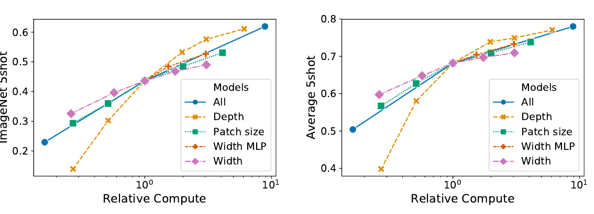
D.3 头的类型与 class token
为了尽可能贴近原始 Transformer 模型，我们使用了一个额外的 [class] token 作为图像表示。该 token 的输出随后通过一个小型多层感知机（MLP，单个隐藏层使用 tanh 非线性）转换为类别预测。
这一设计继承自用于文本的 Transformer 模型，我们在正文中一直使用它。最初我们尝试只用图像块嵌入、对其做全局平均池化（GAP），再接线性分类器——正如 ResNet 最终特征图的做法——但表现很差。不过我们发现，这既不是由于额外的 token，也不是由于 GAP 操作。相反，性能差异完全由对学习率的不同需求解释，见图 9。
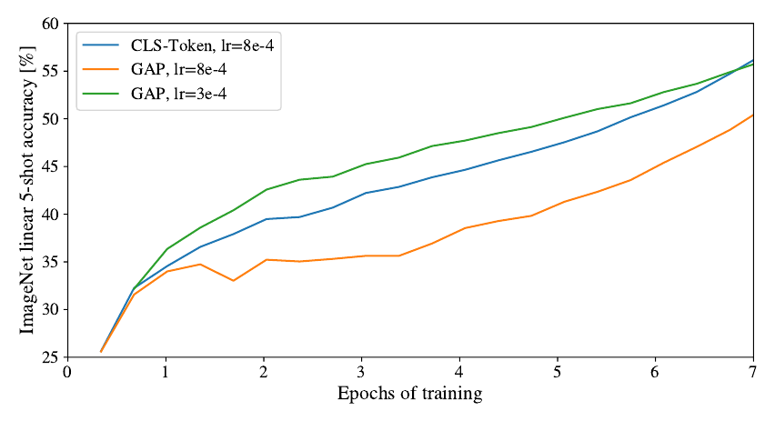
D.4 位置嵌入
我们对用位置嵌入编码空间信息的不同方式做了消融。我们尝试了以下情形：
- 不提供位置信息：把输入视为一袋块。
- 一维位置嵌入：把输入视为按光栅顺序排列的块序列（本文其他所有实验的默认做法）。
- 二维位置嵌入：把输入视为二维的块网格。此时学习两组嵌入，分别对应两个轴（X 嵌入与 Y 嵌入），各为 D/2 维。然后根据输入块在网格中的坐标，把 X 与 Y 嵌入拼接得到该块的最终位置嵌入。
- 相对位置嵌入：用块之间的相对距离而不是绝对位置来编码空间信息。为此我们使用一维相对注意力，在其中定义所有可能块对的相对距离。于是对每一给定对（一个作为查询，另一个作为注意力机制中的键/值），我们有一个偏移 pq − pk，每个偏移对应一个嵌入。然后我们运行额外的注意力：使用原始查询（查询的内容），但把相对位置嵌入作为键。我们随后把相对注意力得到的 logits 作为偏置项，在施加 softmax 之前加到主注意力（基于内容的注意力）的 logits 上。
除了编码空间信息的不同方式，我们还尝试了把这些信息引入模型的不同方式。对一维与二维位置嵌入，我们尝试了三种情形：(1) 在模型 stem 之后、送入 Transformer 编码器之前把位置嵌入加到输入上（本文其他所有实验的默认做法）；(2) 在每一层开头学习并把位置嵌入加到输入上；(3) 在每一层开头把一组学习到的位置嵌入加到输入上（层间共享）。
| 位置嵌入 | 默认 / Stem | 每一层 | 每一层-共享 |
| 无位置嵌入 | 0.61382 | 不适用 | 不适用 |
| 一维位置嵌入 | 0.64206 | 0.63964 | 0.64292 |
| 二维位置嵌入 | 0.64001 | 0.64046 | 0.64022 |
| 相对位置嵌入 | 0.64032 | 不适用 | 不适用 |
表 8 在 ViT-B/16 模型上以 ImageNet 5-shot 线性评估的位置嵌入消融结果。
表 8 汇总了在 ViT-B/16 模型上这一消融研究的结果。可以看到，虽然无位置嵌入的模型与有位置嵌入的模型之间存在很大差距，但不同位置信息编码方式之间几乎没有差别。我们推测，由于我们的 Transformer 编码器在块级而非像素级输入上运算，如何编码空间信息的重要性较低。更准确地说，在块级输入中，空间维度比原始像素级输入小得多，例如 14×14 而非 224×224，因此对这些不同的位置编码策略而言，学习表示该分辨率下的空间关系同样容易。即便如此，网络学到的位置嵌入相似性的具体模式取决于训练超参数（图 10）。
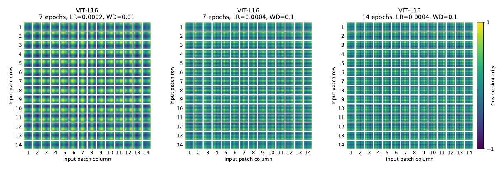
D.5 实际计算成本
我们也关心架构在我们硬件上的真实速度，由于通道宽度、缓存大小等细节，它并不总能被理论 FLOPs 很好地预测。为此，我们对主要关注的模型在 TPUv3 加速器上做推理速度计时；推理与反向传播速度之间只差一个与模型无关的常数因子。
图 12（左）显示在各种输入尺寸下，一个核心每秒能处理多少张图像。每个点都指在很宽的批量大小范围内测得的峰值性能。可以看到，ViT 随图像尺寸的理论双二次增长，只在最大的模型与最大分辨率上才刚开始显现。
另一个关心的量是每个模型能装进一个核心的最大批量大小，越大越有利于扩展到大规模数据集。图 12（右）给出同一组模型的这一量。这表明大型 ViT 模型在内存效率上相对 ResNet 模型有明显优势。
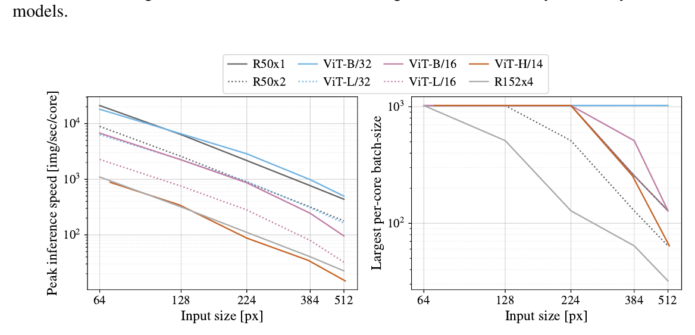
D.6 轴向注意力
轴向注意力（Axial Attention）(Huang et al., 2020; Ho et al., 2019) 是一种简单而有效的技术，用于在组织为多维张量的大输入上运行自注意力。轴向注意力的总体思想是执行多次注意力运算，每次沿输入张量的单个轴，而不是把一维注意力施加到展平后的输入上。在轴向注意力中，每次注意力沿某一特定轴混合信息，同时保持其他轴上的信息相互独立。沿着这条路线，Wang et al. (2020b) 提出了 AxialResNet 模型，把 ResNet50 中所有 3×3 卷积替换为轴向自注意力，即行注意力与列注意力，并用相对位置编码增强。我们实现了 AxialResNet 作为基线模型3。
此外，我们修改 ViT 使其处理二维形状的输入而不是一维块序列，并引入 Axial Transformer 块：其中不再是「自注意力 + MLP」，而是「行自注意力 + MLP 之后接列自注意力 + MLP」。
图 13 给出 Axial ResNet、Axial-ViT-B/32 与 Axial-ViT-B/16 在 JFT 上预训练后、在 ImageNet 5-shot 线性上的性能，与预训练计算量（以 FLOPs 数和推理时间（每秒样例数）两种方式衡量）的关系。可以看到，Axial-ViT-B/32 与 Axial-ViT-B/16 在性能上都优于对应的 ViT-B，但代价是更多计算。这是因为在 Axial-ViT 模型中，每个带全局自注意力的 Transformer 块被替换为两个 Axial Transformer 块（一个行自注意力、一个列自注意力）；尽管轴向情形下自注意力所作用的序列长度更小，但每个 Axial-ViT 块多了一个 MLP。对 AxialResNet，尽管它在准确率/计算权衡上看起来合理（图 13 左），其朴素实现在 TPU 上极慢（图 13 右）。
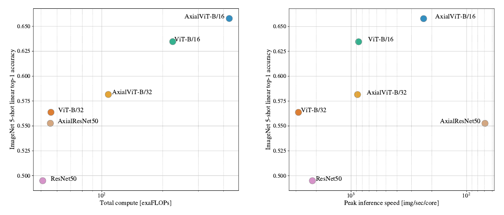
3 我们的实现基于 https://github.com/csrhddlam/axial-deeplab 的开源 PyTorch 实现。在我们的实验中，我们在准确率方面复现了 (Wang et al., 2020b) 报告的结果；但与开源实现类似，我们的实现在 TPU 上非常慢。因此我们无法用它做大规模实验。经过仔细优化的实现或许可以解除这一限制。
D.7 注意力距离
为了理解 ViT 如何使用自注意力整合整幅图像的信息，我们分析了不同层注意力权重所跨的平均距离（图 11）。这一「注意力距离」类似于 CNN 中的感受野大小。平均注意力距离在低层各头之间差异很大：有些头关注图像的大部分区域，另一些只关注查询位置附近的小区域。随深度增加，所有头的注意力距离都增大。在网络后半部分，大多数头在 token 之间广泛关注。
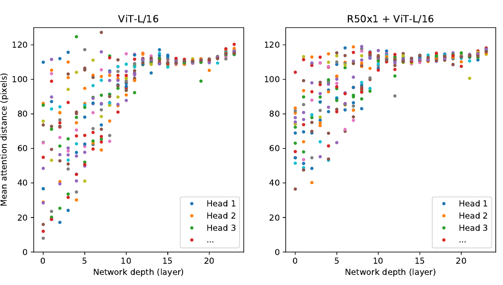
D.8 注意力图
为计算输出 token 到输入空间的注意力图（图 6 与图 14），我们使用了 Attention Rollout (Abnar & Zuidema, 2020)。简言之，我们把 ViT-L/16 在所有头上的注意力权重取平均，然后递归地把所有层的权重矩阵相乘。这解释了注意力在所有层上跨 token 的混合。
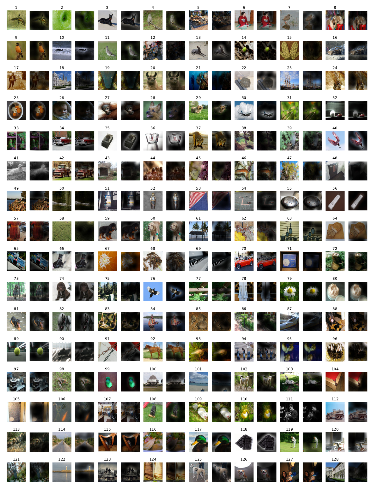
D.9 ObjectNet 结果
我们也按 Kolesnikov et al. (2020) 的评估设置，在 ObjectNet 基准上评估旗舰模型 ViT-H/14，得到 82.1% 的 top-5 准确率与 61.7% 的 top-1 准确率。
D.10 VTAB 分解
表 9 给出在每个 VTAB-1k 任务上取得的分数。
| Caltech101 | CIFAR-100 | DTD | Flowers102 | Pets | Sun397 | SVHN | Camelyon | EuroSAT | Resisc45 | Retinopathy | Clevr-Count | Clevr-Dist | DMLab | dSpr-Loc | dSpr-Ori | KITTI-Dist | sNORB-Azim | sNORB-Elev | Mean | |
| ViT-H/14 (JFT) | 95.3 | 85.5 | 75.2 | 99.7 | 97.2 | 65.0 | 88.9 | 83.3 | 96.7 | 91.4 | 76.6 | 91.7 | 63.8 | 53.1 | 79.4 | 63.3 | 84.5 | 33.2 | 51.2 | 77.6 |
| ViT-L/16 (JFT) | 95.4 | 81.9 | 74.3 | 99.7 | 96.7 | 63.5 | 87.4 | 83.6 | 96.5 | 89.7 | 77.1 | 86.4 | 63.1 | 49.7 | 74.5 | 60.5 | 82.2 | 36.2 | 51.1 | 76.3 |
| ViT-L/16 (I21k) | 90.8 | 84.1 | 74.1 | 99.3 | 92.7 | 61.0 | 80.9 | 82.5 | 95.6 | 85.2 | 75.3 | 70.3 | 56.1 | 41.9 | 74.7 | 64.9 | 79.9 | 30.5 | 41.7 | 72.7 |
表 9 各 VTAB-1k 任务上的性能分解。
图表索引
- 图 1 模型概览：切块 → 线性嵌入 → 加位置嵌入 → 标准 Transformer 编码器（2 节）
- 图 2 VTAB 性能在 Natural / Specialized / Structured 三组的分解（4.2 节）
- 图 3 迁移到 ImageNet：预训练数据集规模的影响（4.3 节）
- 图 4 ImageNet 线性少样本评估与预训练规模的关系（4.3 节）
- 图 5 性能与预训练计算量：ViT / ResNet / 混合模型（4.4 节）
- 图 6 输出 token 到输入空间的注意力示例（4.5 节）
- 图 7 嵌入滤波器、位置嵌入相似性与注意力距离（4.5 节）
- 图 8 Transformer 不同模型维度的规模研究（附录 D.2）
- 图 9 class token 与全局平均池化分类器的比较（附录 D.3）
- 图 10 不同超参数训练所得模型的位置嵌入（附录 D.4）
- 图 11 按注意力头与网络深度的受关注区域大小（附录 D.7）
- 图 12 各架构的实际墙钟时间与最大单核批量大小（附录 D.5）
- 图 13 轴向注意力模型的性能与速度（附录 D.6）
- 图 14 更多注意力图示例（附录 D.8）
表 1 模型变体（4.1 节）、表 2 与当时最好水平的比较（4.2 节）、表 3 训练超参数、表 4 微调超参数（附录 B.1–B.1.1）、表 5 不同预训练规模下的 Top-1 准确率、表 6 规模实验详细结果（附录 C）、表 7 ResNet 上 Adam 与 SGD 的对比（附录 D.1）、表 8 位置嵌入消融（附录 D.4）、表 9 VTAB-1k 分解（附录 D.10）已在正文中直接排出。
本页由 Zotero 库中的 PDF 原文与 MinerU 解析结果翻译整理而成。图片为从源 PDF 中裁取的原始插图，存于同目录下 images/。参考文献保留原文，未作翻译；原文脚注按位置保留并译出。